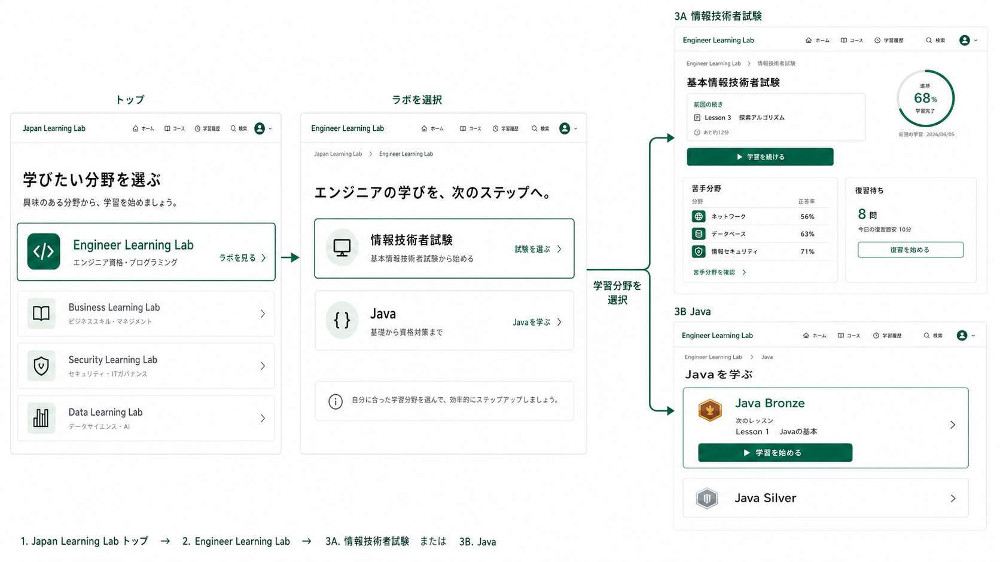
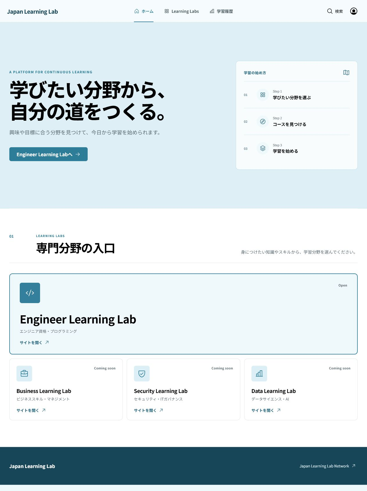
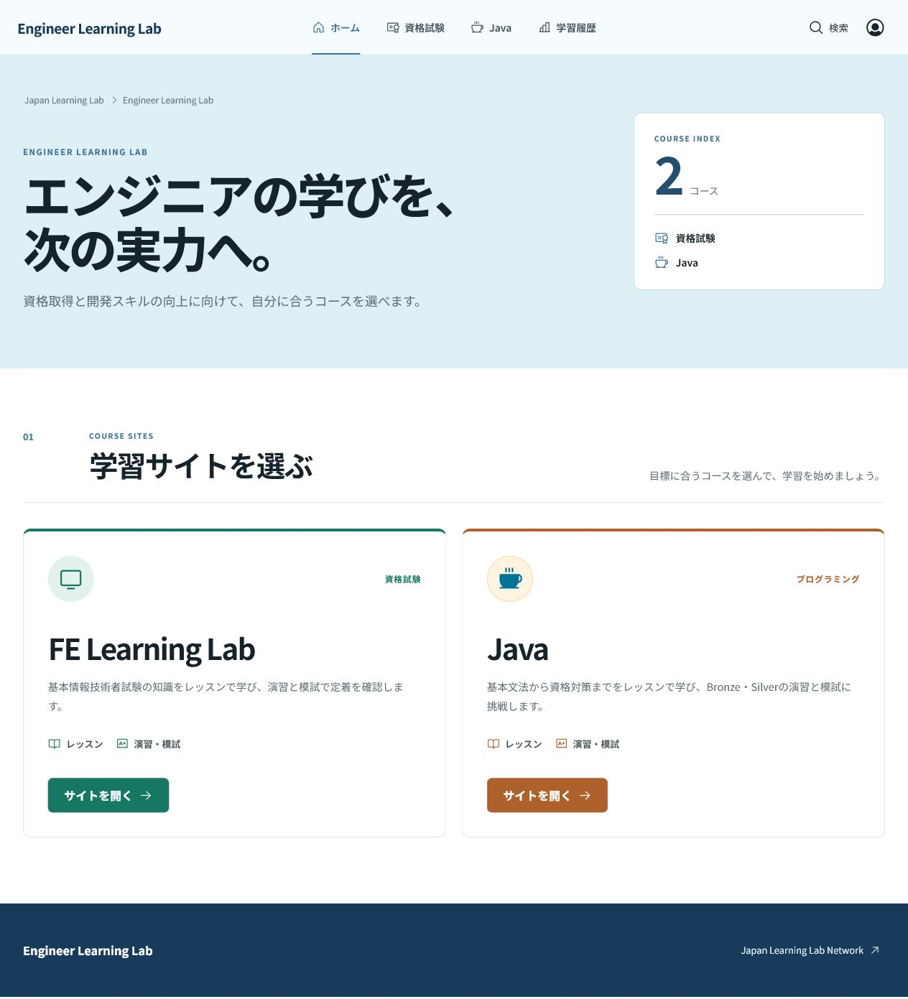
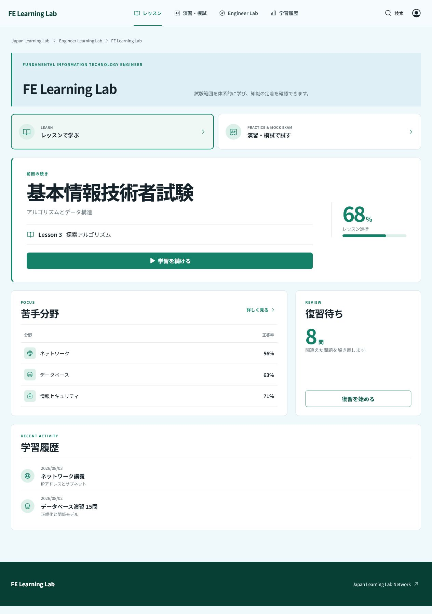
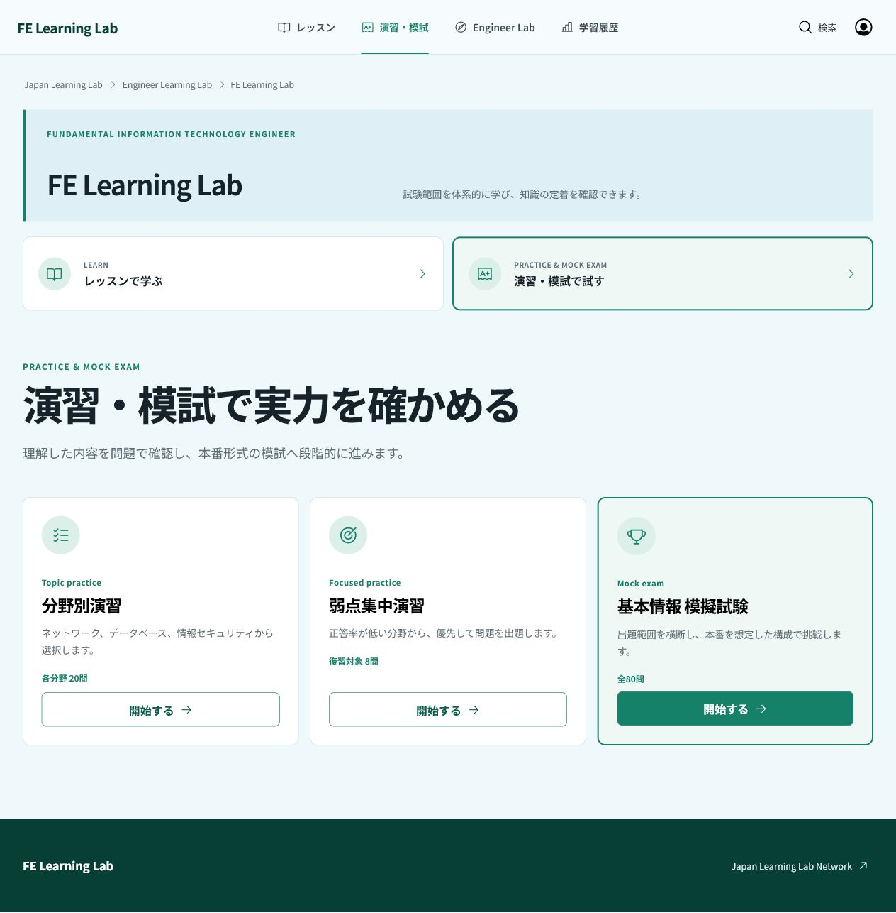
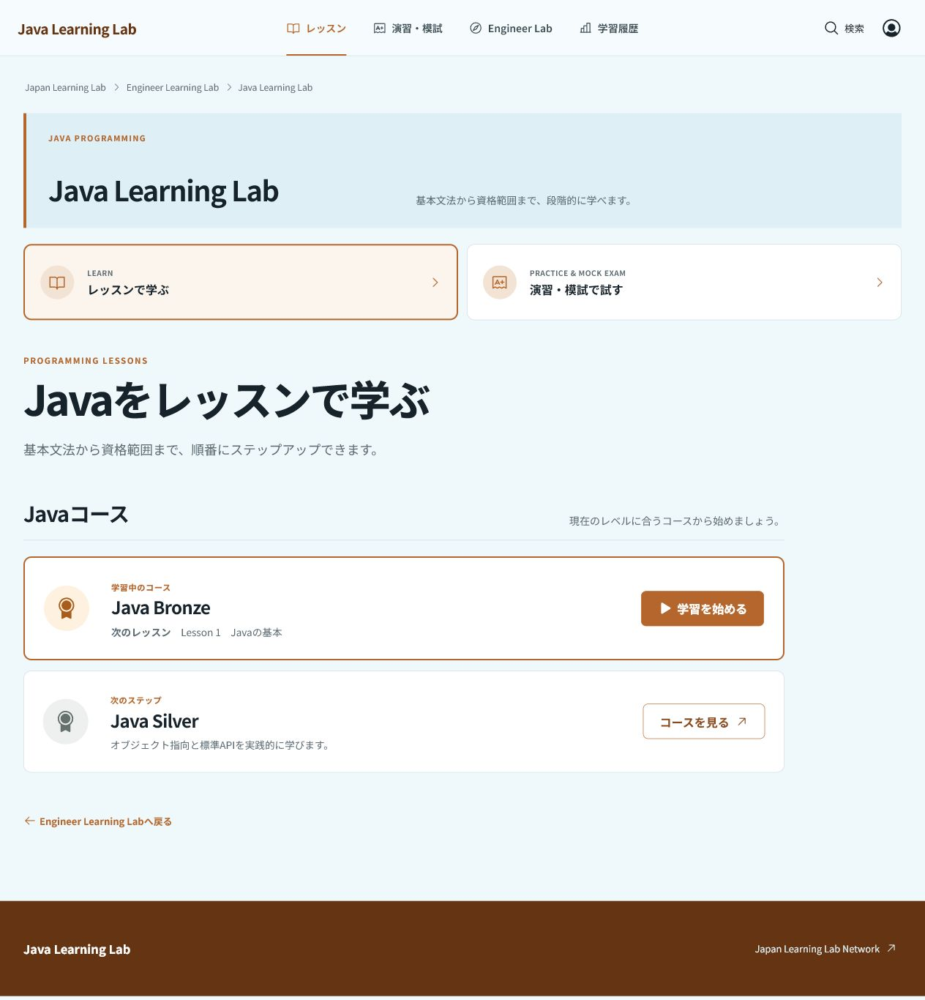
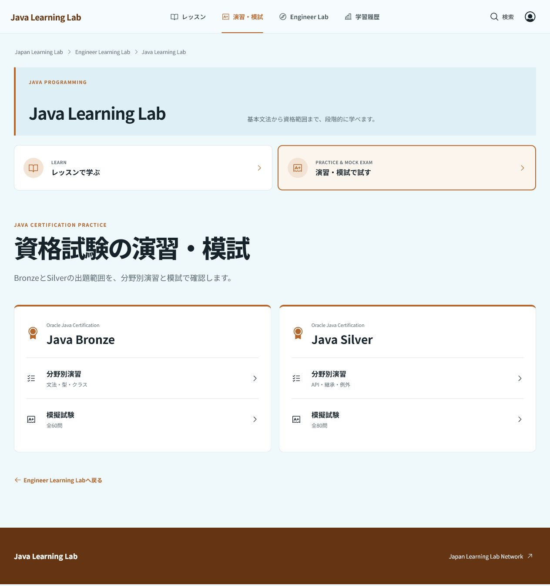

Design QA: source and implementation
Source flow board and browser-rendered implementation, updated with the approved pale-blue platform system, independent course sites, and separate lesson / practice modes.
Source visual truth

Rendered implementation





